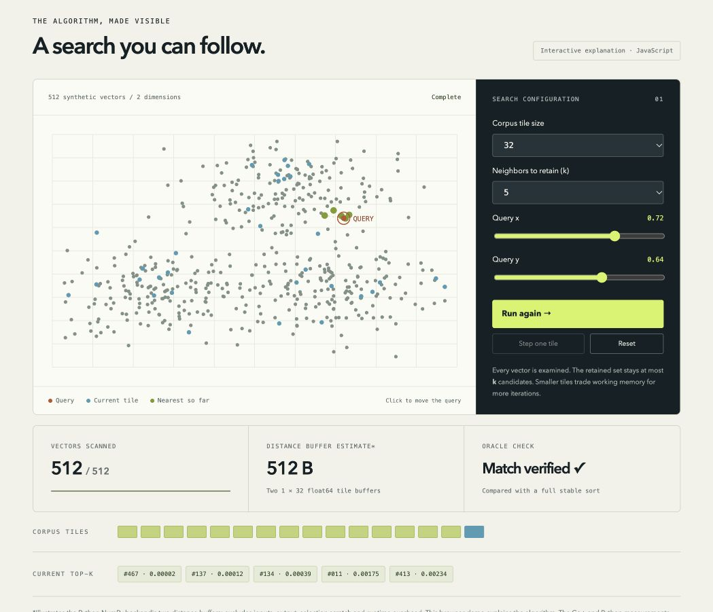

01 / Systems labOct 2026 · AI-assisted project
VectorTile
Every vector.
Less distance workspace.
How do you find the exact nearest neighbors without storing every query-to-corpus distance at once?
This C++17/Python lab compares streaming heaps with tiled NumPy search. It makes parallelism, deterministic ties and numerical edge cases visible.
2.33 ms
median CPU search latency64 queries · 8,192 vectors · 64D · top-10
Apple M5 · four threads · synthetic data
Apple M5 · four threads · synthetic data

Created with substantial AI-assisted implementation and review; development provenance. The browser animation explains the algorithm; timings come from separate CPU runs. CUDA hardware validation is pending.